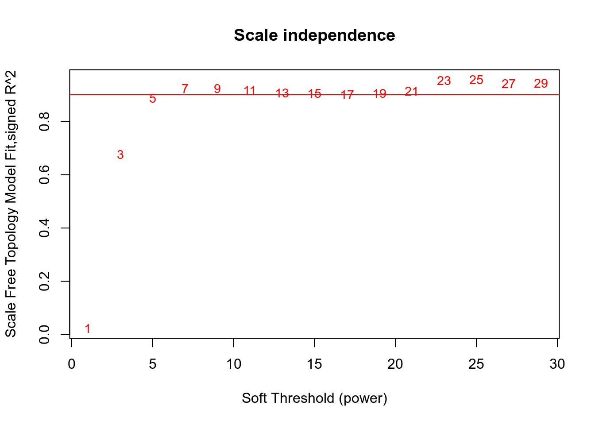
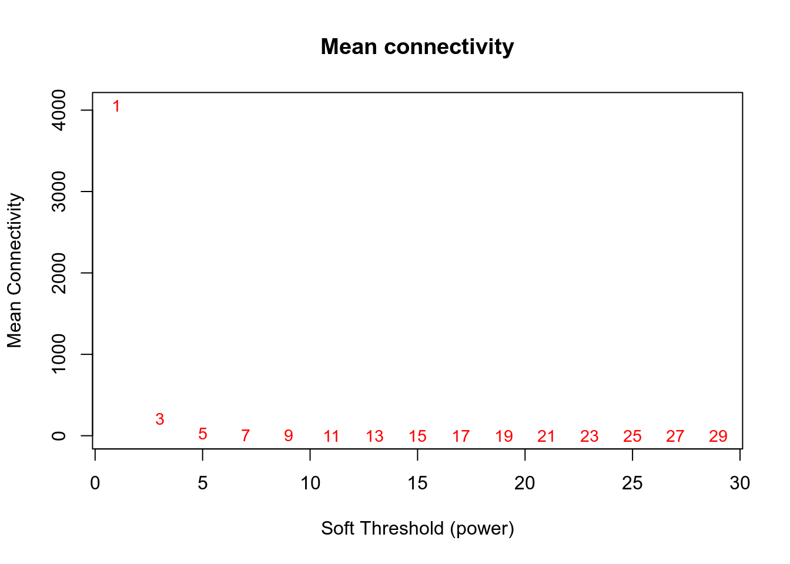
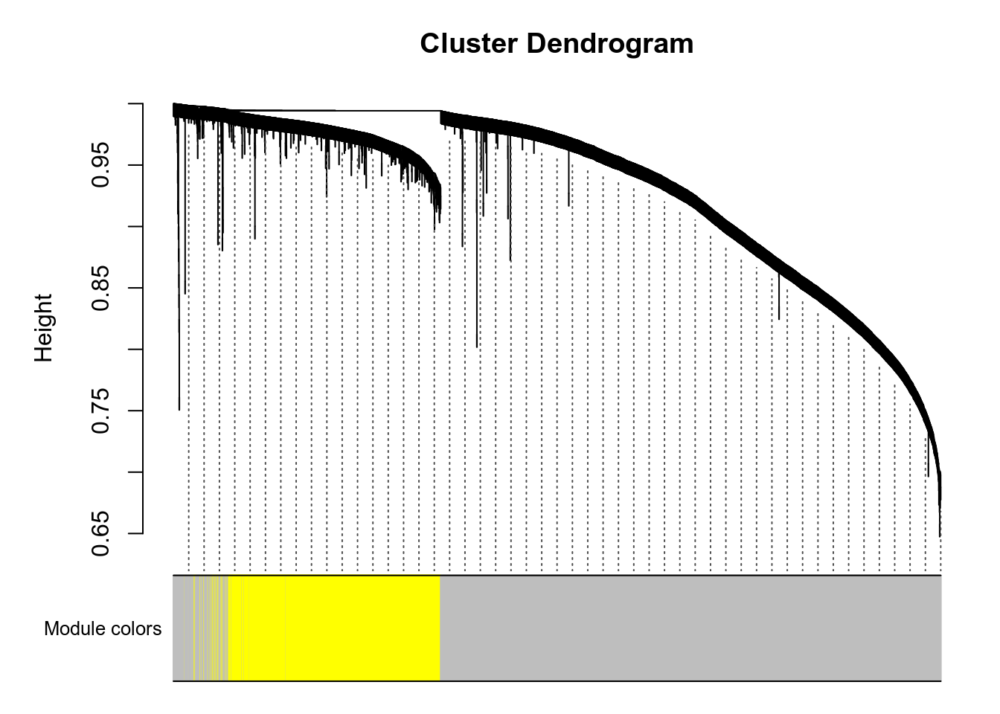

3.2.1.6 TCGA-LUAD dataset
There are 36886 genes and 594 samples in the dataset.
All samples and genes look good for the analysis.
## Power SFT.R.sq slope truncated.R.sq mean.k. median.k. max.k.
## 1 1 0.0234 -0.465 0.854 4.05e+03 4.00e+03 7730.00
## 2 3 0.6750 -1.990 0.917 2.10e+02 1.58e+02 1040.00
## 3 5 0.8860 -1.980 0.989 2.95e+01 1.29e+01 351.00
## 4 7 0.9230 -1.870 0.997 7.56e+00 1.54e+00 202.00
## 5 9 0.9240 -1.750 0.996 2.79e+00 2.53e-01 129.00
## 6 11 0.9160 -1.670 0.996 1.28e+00 5.25e-02 87.30
## 7 13 0.9060 -1.630 0.986 6.68e-01 1.23e-02 61.00
## 8 15 0.9040 -1.590 0.991 3.82e-01 3.22e-03 43.90
## 9 17 0.9000 -1.560 0.991 2.33e-01 8.96e-04 32.30
## 10 19 0.9050 -1.520 0.989 1.50e-01 2.60e-04 24.20
## 11 21 0.9140 -1.480 0.982 1.00e-01 7.83e-05 18.40
## 12 23 0.9530 -1.410 0.992 6.94e-02 2.42e-05 14.30
## 13 25 0.9570 -1.390 0.990 4.95e-02 7.54e-06 11.70
## 14 27 0.9410 -1.400 0.979 3.62e-02 2.44e-06 9.89
## 15 29 0.9430 -1.390 0.975 2.71e-02 8.01e-07 8.42
Network is computed using power=5.

Here are the modules for a few genes of interest:
- VNN1 is in the grey module.
- PPARA is in the red module.
- PPARD is in the yellowgreen module.
- PPARG is in the purple module.
- PPARGC1A is in the tan module.
- PPARGC1B is in the violet module.
g:Profiler results for all modules are available here. Since there are many modules, you should expect at least 1 minute computation on the g:Profiler website for this query. Check below for faster queries focused on VNN1 module.
Figure 3.56: Pathway
Figure 3.57: Kegg
.](_main_files/figure-html/resultsWgcnaProjectIdTcgaLuadKnitPlotEnrichHallmarks-1.png)
Figure 3.58: MSigDb Hallmarks. readable pdf version.
## No enriched DO term in these classesTo check that module-to-genes reattribution is working as expected, heatmap of signal for VNN1 module is produced, both as absolute values and as Z-score ones.
## VNN1 module contains more than 2000 genes. Heatmap generation is skippedVNN1 module contains more than 2000 genes. Heatmap generation is skipped
## VNN1 module contains more than 5000 genes. Correlation analysis is skippedMore than 5000 genes in VNN1 module. Analysis skipped. You should try to reduce module size.